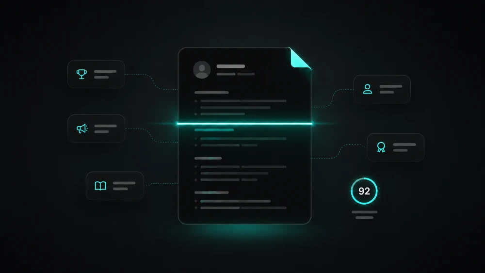
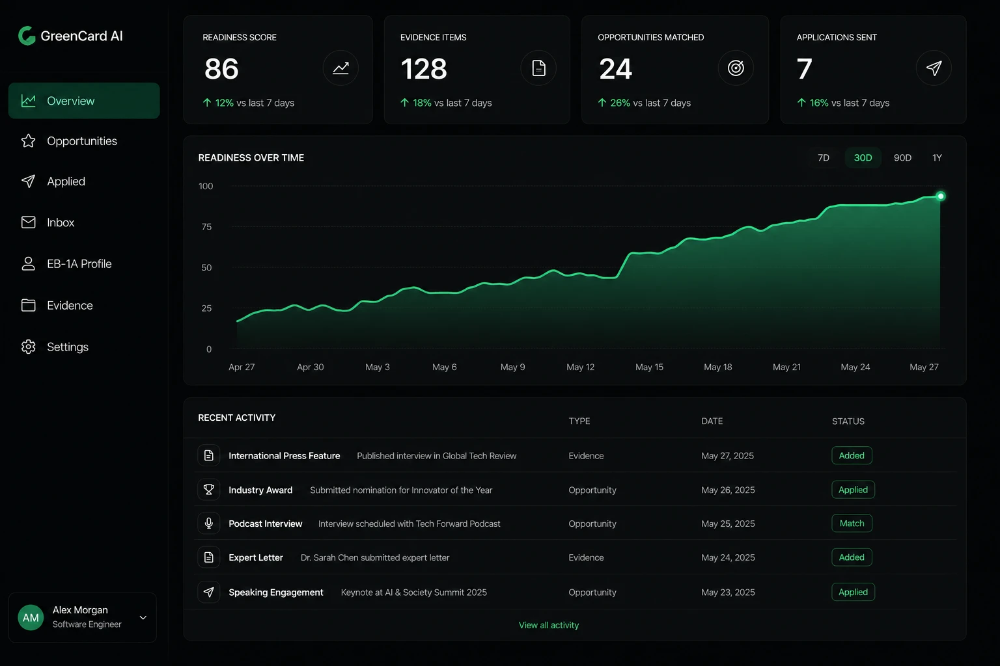
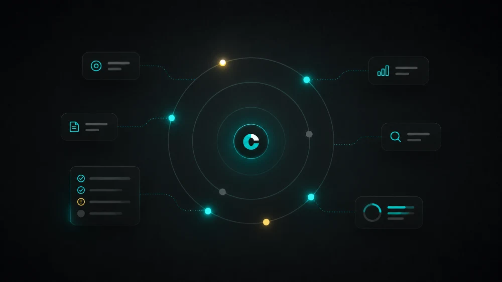
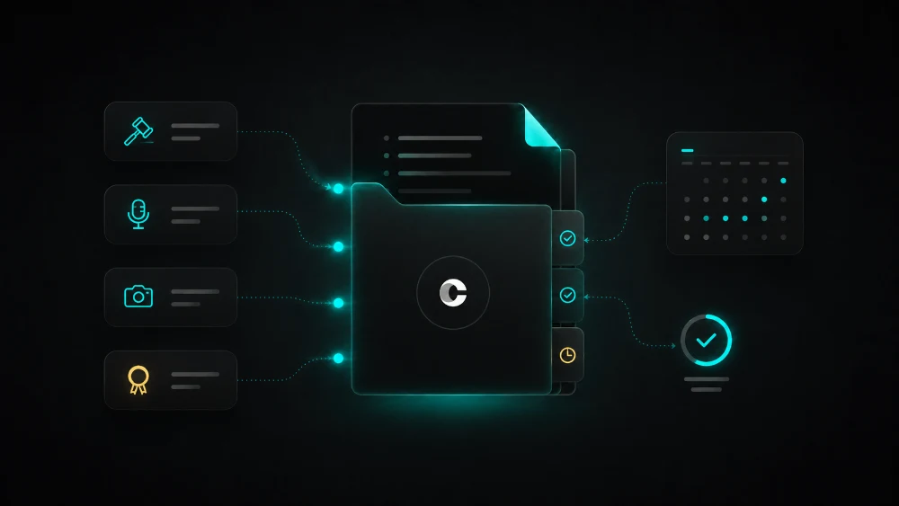

Upload your résumé
Our AI reads every line and maps it onto the USCIS extraordinary-ability criteria. In about a minute you have a readiness score and a profile that knows exactly what it is arguing.
GreenCard AI reads your résumé, maps it to the USCIS extraordinary-ability criteria, and then finds the judging seats, speaking slots, press features, and awards that turn a strong career into an undeniable petition.
60-second readiness score from your résumé. No credit card, no cold calls from lawyers.

12,400+ OPPORTUNITIES INDEXED EVERY MONTH, MATCHED TO YOUR FIELD, SENIORITY, AND GAPS

Our AI reads every line and maps it onto the USCIS extraordinary-ability criteria. In about a minute you have a readiness score and a profile that knows exactly what it is arguing.

Your dossier shows which criteria you already meet, which are weak, and what evidence each one still needs. No mystery, no $400/hr consultation to find out where you stand.

Matched judging seats, talks, press requests, and award windows flow in weekly. Apply in one click, and every acceptance files itself into your petition as exhibit-ready evidence.
We index thousands of opportunities a month and match each one to the exact USCIS criterion it strengthens, so you never wonder whether something is worth your time.
Hackathons, startup competitions, award juries. The cleanest path to the “judging the work of others” criterion.
Conference CFPs, panels, and keynotes matched to your field. Visibility that doubles as evidence of standing.
Journalist requests and contributor seats at major outlets. Published material about you, on demand.
Nomination windows for recognized industry awards, tracked, deadlined, and pre-filled from your profile.
Journal and program-committee review invitations in your discipline, sourced before they are publicized.
Selective professional associations whose admission standards USCIS actually respects.
The “extraordinary ability” green card. Self-petitioned, no employer, no sponsor, no waiting on anyone else’s paperwork.
The extraordinary-ability work visa. The fastest credible route for founders and operators who need status now and a green-card runway later.
The national-interest waiver: prove your work matters to the U.S., that you are positioned to advance it, and that waiving the job offer benefits the country.
I thought I was two years away from EB-1A. GreenCard AI showed me I was three judging panels and one press feature away. Approved in eleven months.
My lawyer asked where my evidence binder came from. It came from a dashboard that had been quietly filing exhibits for nine months.
The weekly matches removed every excuse. Speak here, judge that, answer this journalist. You just say yes and the profile builds itself.
Upload your résumé. See your readiness score in sixty seconds. Let the evidence start arriving.